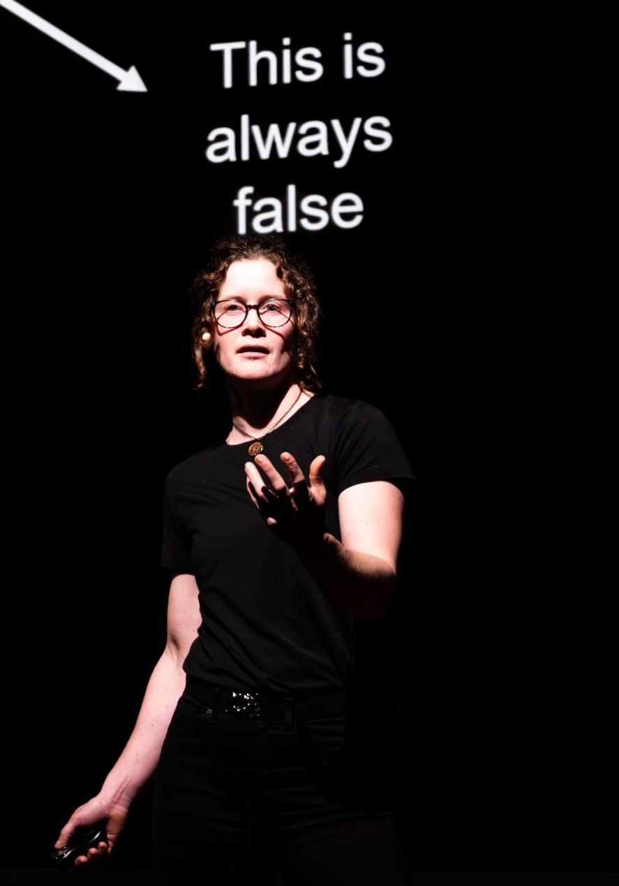

elizabeth.polgreen[at]ed.ac.uk
I am a Reader (~Associate Professor in US terminology) in the School of Informatics at the University of Edinburgh. I am interested in (formal and machine learning-based) synthesis techniques and the use of synthesis to increase the scalability of verification. I hold a research fellowship from the Royal Academy of Engineering.
Previously, I was a postdoctoral research scholar in Professor Sanjit Seshia's group at the University of California, Berkeley. I completed my PhD at the University of Oxford, supervised by Professor Alessandro Abate.
My CV is available here. A short bio for talk introductions is available here.